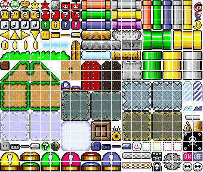
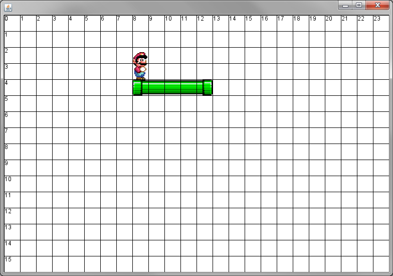
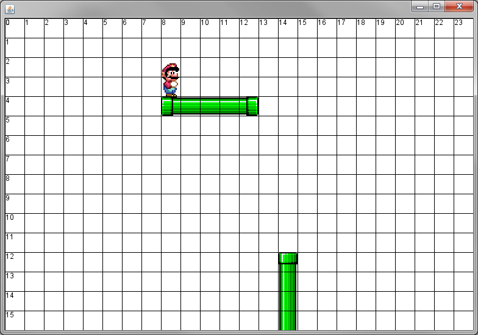
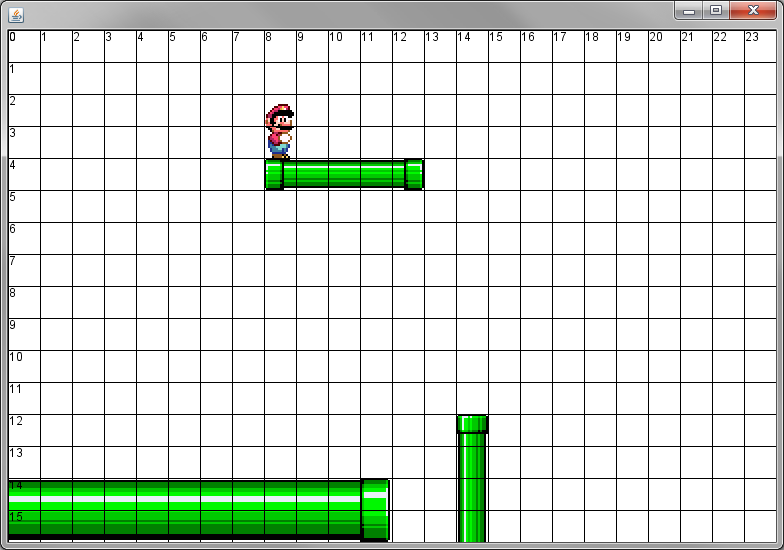
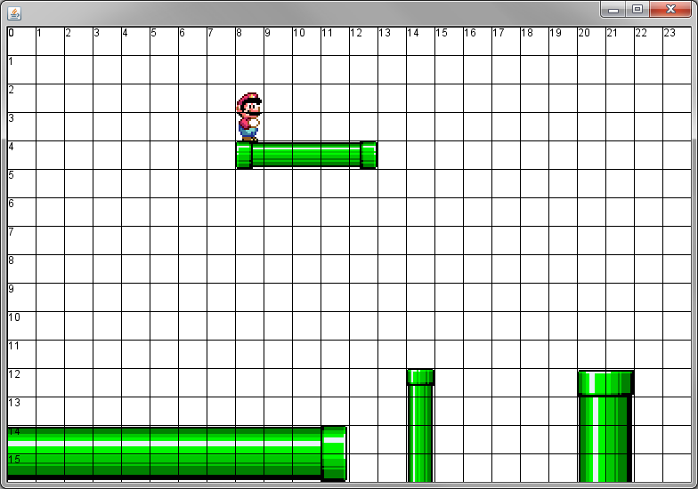

Now that we have the ability to load tiles from our sprite sheet, we can make some objects that represent different types of objects that can be jumped on, such as dirt and pipes and other things that should act like blocks. The problem is that with all of these objects, our canvas class would need an ArrayList for every single different type.
To avoid this problem, we’re going to use interfaces. One way that an interface can be used is to define a category of objects that have similar functions. Right now, the Block class has to do a few things for our character to be able to interact with it: Paint itself, generate a hit box,move left, and move right. Add the following interface to your project:
import sacco.gui.*;
public interface Obstacle
{
public BoundingBox getHitBox();
public void paintSelf(PaintBrush brush);
public void moveLeft(int num);
public void moveRight(int num);
}
The interface is named Obstacle, so every object that implements the interface may be considered an ‘Obstacle’ object and stored as an ‘Obstacle’ variable. Now we can modify our program to deal with the more generic Obstacle type instead of Block. Luckily it’s not too bad; change the instance field to be an ArrayList<Obstacle> instead of Blocks. Any time that you use Block as a type it should be replaced with Obstacle. The only time that you shouldn’t replace Block with obstacle is when you’re constructing a new Block, since Block is the object and Obstacle is the type, you must still construct a Block and add it to the ArrayList<Obstacle>.
Trying to compile this will cause a problem. A Block doesn’t fall under the Obstacle category yet. Go to the Block class and change the header to read
public class Block implements Obstacle
If the class doesn’t immediately compile, you probably have some small spelling differences with your methods that need to be fixed.
After that the Canvas class should compile. If not, it could also be slight spelling differences. Once the whole thing compiles, run the program to make sure that it works as it did before. After all of that work the best case is that we’re back where we started, but we’ve made the framework to make our lives easier as we move forward.

One trick that is used by game designers is to make patterns that can repeat when put side by side. This way they can make things of differing size without needing new images for each of them. The example that we’re going to start with is the Thin Horizontal Pipe. In order to make a pipe of any length you only need three images: The left side, the middle piece, and the right side. In order to make it longer than three cells, you simply need to draw more middle pieces.
Create a class named ThinHPipe that implements the Obstacle interface.
The ThinHPipe class will need 6 instance fields: Three Pictures to represent the left, middle, and right tiles as well as ints for x,y, and how many cells wide it is. Since our world is now being made of tiles, we must start thinking of distances in terms of 32x32 cells in a grid. If a ThinHPipe is 4 cells wide, that means its width is 4*32 => 128
The constructor for ThinHPipe should take in a row, column, and width(in cells). Multiply the row by 32 and assign it to the y variable, and use the column to determine the x. It should also load the three horizontal pipe pieces to the appropriate variables. For Example:
left = PlatformerCanvas.loader.loadTile(1,8); …
There are a few methods that are required by the Obstacle interface.: moveLeft and moveRight are practically copies of the ones in the Block class The getHitBox method will look similar as well. The height is always 32 and the width may be calculated with multiplication.
The paintSelf method is the tricky one. We will have to draw each of the images at the appropriate locations and repeat the middle section as needed. Again the key is to use the number 32 as your guide. The left side of the pipe is drawn at x,y and then the middle ones are drawn every 32 pixels until finally the right side is drawn. The number of middle sections is always two less than the overall width.
There are many ways to do this, but one of the easiest ways is to create a variable that starts at x, and then is increased by 32 before it’s used again. The following method should work, as long as you match the left/mid/right variables to the ones that you’ve chosen. Pay close attention to how the xLoc variable is used.
public void paintSelf(PaintBrush b)
{
int xLoc=x;
b.drawPicture(left,xLoc,y,32,32);
for( int i = 0; i<colsWide-2; i++)
{
xLoc += 32;
b.drawPicture(mid,xLoc,y,32,32);
}
xLoc += 32;
b.drawPicture(right,xLoc,y,32,32);
}
Now go back to your PlatformCanvas class’s constructor. Currently you have many statements adding blocks to your level. Since you probably don't want to lose this, copy those and put them into a method 'public void myFirstLevel()'. If you want to load your level later you simply need to call this method from within the constructor.
Now, still in your constructor, construct a ThinHPipe object with (4,8,5) as the parameters (it’s at location 8,4 and is 5 cells wide). Add the object to the ArrayList with all the other Blocks.
Run your program and hopefully you will see a pipe that is five lengths long.

Now that you have a Thin Horizontal Pipe it is up to you to create a Thin Vertical Pipe. Create a class named ThinVPipe which implements the Obstacle interface. The constructor should take in three ints, the row, the column, and the number of cells tall it should be.
Much of the code for the vertical pipe is similar to the code for the horizontal pipe, you're just going in a different direction. This means that the width is always 32 and the height is what varies.
To test your ThinVPipe class, construct one at row 12, column 14 with a length of 7.

The more common type of pipe that you might see is the fat pipe, which has a varying width but is always two cells tall.
Create a class named FatHPipe, which will have instance fields for x,y,and length along with six different Pictures: a left, middle, and right for both the top and the bottom of the pipe.
The constructor for FatHPipe should be similar to ThinHPipe; taking in a row, column, and length.
Make sure that the FatHPipe implements the Obstacle interface, meaning that you must add all the methods that are in it. The paintSelf should be the biggest challenge. This time you will be responsible for drawing twice as many images. For the horizontal pipe, you will be drawing a row at your y location as well as your ylocation+32.
Test your object by adding a new FatHPipe with locaiton 14,-2 and a length of 14. You project should look similar to the following:

You guessed it! Create a class named FatVPipe that implements the Obstacle interface. Its constructor should take in a row, column, and length.
After you've finished, load a FatVPipe with row 12,column 20, and length 7.

Right now every pipe is green, but that's only because we've loaded the green images. Our goal now is to add the ability to load different images into the important instance fields.
Go to ThinHPipe's constructor. Currently you have three lines that should look similar to the following:
left = PlatformerCanvas.loader.loadTile(1,8); mid = PlatformerCanvas.loader.loadTile(1,9); right = PlatformerCanvas.loader.loadTile(1,10);
We can think of these lines as loading the pipe that starts at (1,8). Once we know that it starts at (1,8), we can do some simple math to load the other two images. Add a method to the ThinHPipe class with the following header:
public void loadImages(int startRow, int startCol)
The startRow and startCol will represent the 1 and 8 that we start with. The tile at those locations should load into the left variable, and the mid should be one column to the right of that, and so on. This means that within the method we should have the code
left = PlatformerCanvas.loader.loadTile(startRow,startCol); mid = PlatformerCanvas.loader.loadTile(startRow,startCol+1); right = PlatformerCanvas.loader.loadTile(startRow,startCol+2);
Notice that you don't use the numbers 1 or 8 directly, only the parameter variables. Now it's time to modify the constructor to rely on this method. Delete the three lines that load into left,mid, and right; replacing them with loadImages(1,8). If you run your program after that, you should still see the same green pipe as before. Go back to the ThinHPipe class and change it to loadImages(0,8). When you run it, the pipe should now be orange. What this means is that now the one pipe class can easily represent many different pipes.
In order to determine which pipe we would like to load, we are going to add some constants to represent each type that we want to have. Each constant should be a public static int. For example: public static int GREEN = 7483992; The number is not important, as long as it's different than the other ints. You are not required to add all of the colors, but you should have AT LEAST three choices
Add a SECOND constructor with the following header
public ThinHPipe(int row, int col, int width, int type)
This constructor has a fourth variable to represent the type. You should take care of the x,y, and width instance fields as you did in the first constructor, but when it comes time to load the images you should compare the 'type' parameter with each of your colors, and then use them to load the correct pipe. For Example:
if( type == GREEN )
{
loadImages(2,8);
}
else if...
Now go to your PlatformCanvas and look at the place where you construct a new ThinHPipe and add it to the ArrayList. At the moment it says something along the lines of 'new ThinHPipe(4,8,5)'. To call our new constructor we want to give it another parameter to represent the type. Changing it to read 'new ThinHPipe(4,8,5,ThinHPipe.GREEN)' would simply load the green pipe, so change it to load one of the other colors that you chose. Run the program and check to see that the horizontal pipe is the color that you want.
Now that ThinHPipe class can easily load many different types of pipes, it's time to do a similar process with the three other pipe classes. Go to the ThinVPipe and set it up with the same colors that you did for ThinHPipe, and then modify the FatHPipe and FatVPipe to have two different color.
In the PlatformCanvas, add a method with the following header:
public void pipeLevel()
This method will load your 'pipe' level that you will use to demonstrate that you've completed the different types of pipes. It should have at least one example of each ThinHPipe, ThinVPipe, FatHPipe, and FatVPipe that you have. Once you've created this method, changed the PlatformCanavs constructor so that it calls the method and loads the level.